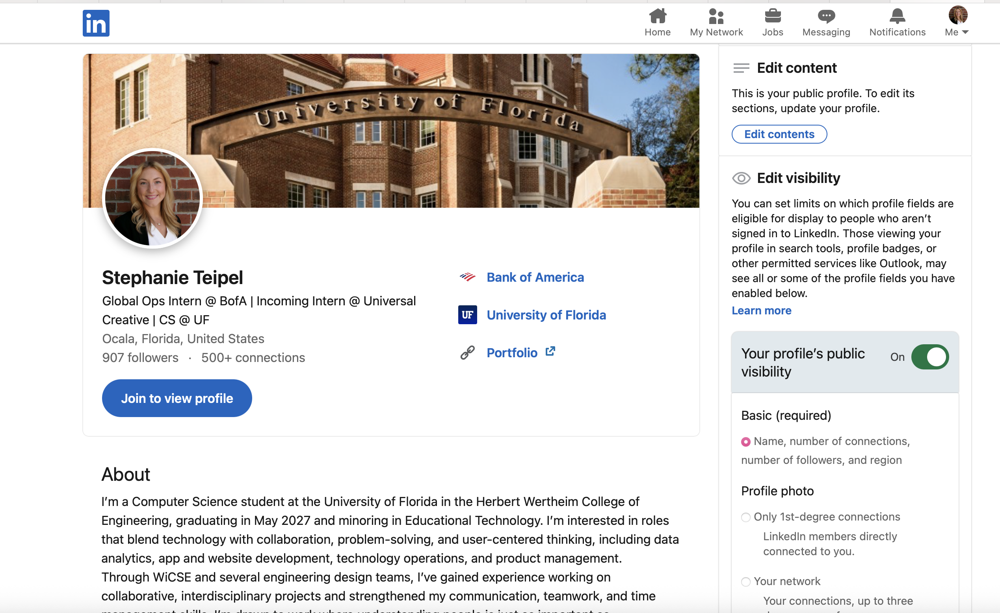

Module 1: Career Foundations & Professional Presence
Audio:
Overview
In this module, you will begin exploring your career interests, identifying your strengths, and narrowing down the types of jobs that best align with your goals. You will also learn how to professionally showcase your skills and experiences online to begin building your professional presence.
Key Concepts
This module is designed to help you better understand your career interests and how your skills, experiences, and strengths connect to potential career paths.
The first step is narrowing your job search. Rather than applying to every opportunity you see, take time to think about what you enjoy, what you're good at, and the types of roles that genuinely interest you. Consider past experiences and identify what you enjoyed most. This reflection will not only help guide your job search but will also make it easier to create and tailor your resume in a later module.
Once you have a better understanding of your goals, you'll begin building your professional online presence. In this module, you'll learn how to create or improve your LinkedIn profile so it effectively highlights your experiences, skills, and career interests. While connecting with professionals and classmates on LinkedIn is encouraged, it is completely optional.

Assignments
This module has one required assignment: create a LinkedIn profile or update your existing one. Your profile should include the following:
- Professional headshot
- Headline
- About section
- Skills
- Experience
- Education
For inspiration, take a look at LinkedIn profiles from professionals in careers or industries that interest you.
An optional career reflection worksheet is also available to help you think more deeply about your interests, strengths, and goals. While this activity is not graded, you may find it helpful as you continue through the course and prepare for future assignments.